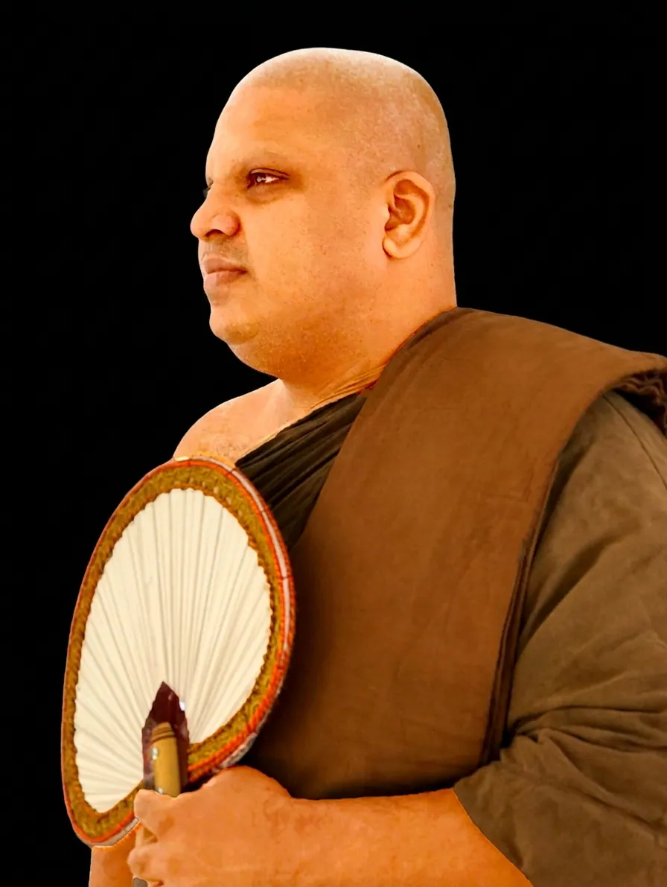

Meditation Teacher · Abbot
Royal Paṇḍita Ven. Anuradhapura Ariyajeewa Thero
Chief Incumbent — Gold Coast Buddhist Centre, Australia · Sri Abhayaramaya Purana Tampita Viharaya, Kurunegala · Rideekanda Forest Monastery, Matale
The Most Venerable Royal Paṇḍita Anuradhapura Ariyajeewa Thero is the founder of the Ehipassiko International Meditation Center, begun more than ten years ago as the Ariya Chitta Viveka Senasuna.
He was higher-ordained at Asgiriya Maha Viharaya under the preceptorship of the Most Venerable Anamaduwe Sri Dhammadassi Maha Thero, Anu Nāyaka of the Siyam Nikāya, Asgiri Chapter. After his monastic education he completed the Rajakeeya Paṇḍita examination to become a scholarly monk.
With command of Sinhala, Pāli, and Sanskrit, he is a fine exponent of the Dhamma, delivering sermons in a lucid style. Having studied the Pāli Canon for years, the Venerable Thero gathered myriad experiences while living in the forests of Sri Pada, Anuradhapura, and Polonnaruwa for nearly five years. Through the meditation experience gained in forest living, he became a meditation master, guiding practitioners in the techniques that lead toward enlightenment.
All his efforts are to deliver the pure and undefiled noble teaching of the Buddha — and to show that emancipation is practically attainable. He presently lives in Australia, serving the noble Dhamma at the Gold Coast Buddhist Centre while pursuing his PhD studies.